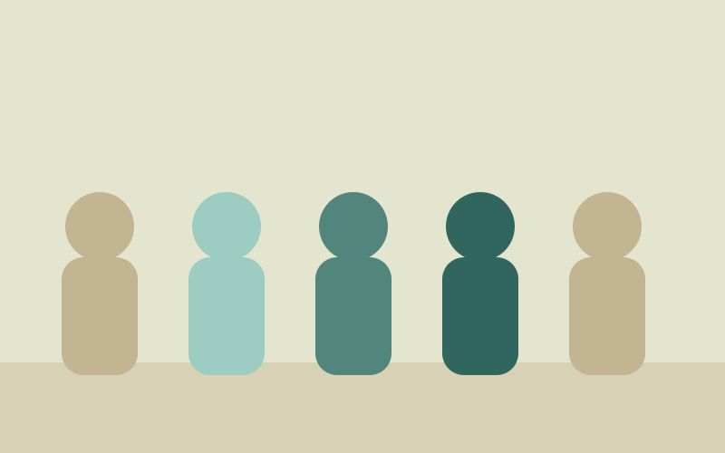

Our Work
From collection to distribution, here is how a donated garment becomes someone's school uniform, matric dance outfit, or first step back into confidence.
Our Programmes
Collection & Sorting
Volunteers collect donated clothing at our Collection Centres and community drives, then sort and clean each item before it is distributed.
School Uniform Support
Working with schools to identify learners who cannot afford uniforms, and providing clean, good-quality uniforms in time for the school term.
Matric Dance Wardrobe
Formal wear for matriculants who could not otherwise afford an outfit for their matric dance — because the milestone belongs to everyone.
Community Clothing Drives
Regular drives held in partnership with community centres and local businesses across Gauteng, the Eastern Cape and KwaZulu-Natal.

Where we work
Clothes For All operates Collection Centres in Johannesburg, Cape Town, Durban and Gqeberha, and distributes clothing to communities across three provinces:
- Gauteng
- Eastern Cape
- KwaZulu-Natal
"A uniform I didn't have to worry about"
When a Johannesburg primary school reached out ahead of the new term, our volunteers sorted and delivered uniforms for eighteen learners within a week — turning donated clothing into one less thing a family had to worry about.
Support a story like this
Frequently Asked Questions
What can I donate?
Clean, good-quality clothing for all ages, as well as school uniforms and formalwear. Items should be free of major damage.
How do I volunteer?
Fill in the volunteer section of our enquiry form and a coordinator in your area will be in touch to arrange your first shift.
How do I request assistance?
Schools, families and community organisations can reach out through our enquiry form or by visiting a Collection Centre directly.